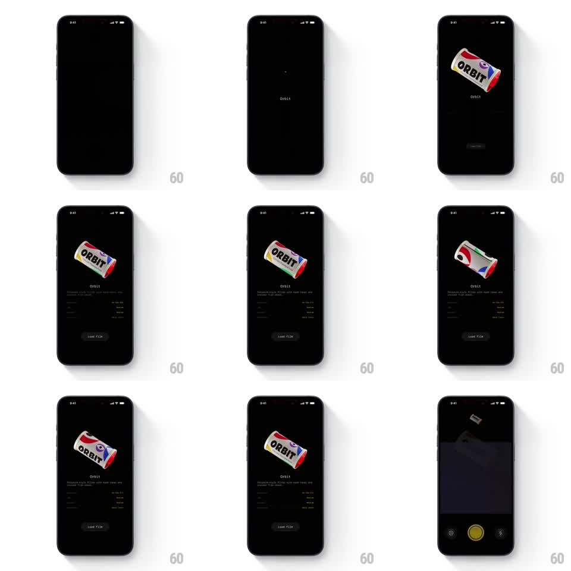

Media
Frame-by-frame

Rebuild this animation 1:1: Roll's film detail - a 3D film canister ("ORBIT" roll) spins continuously while scaling into view above the film's name, description, and spec grid, and loading the film shrinks it away into the camera.

Rebuild this animation 1:1: Roll's film detail - a 3D film canister ("ORBIT" roll) spins continuously while scaling into view above the film's name, description, and spec grid, and loading the film shrinks it away into the camera.
## Integration
Integration: stack-agnostic spec - springs given as stiffness/damping, timed motions as duration + curve; map every value to your framework and animation library of choice.
## Scene
Black film-detail screen. Top half: the 3D canister, white body with red/blue ORBIT label art. Below: film name, one-line description, two-column spec grid (format, exposures, ISO-style rows), and a dark "Load film" button. Final state cuts to the camera view with a yellow shutter button.
## Motion spec
Pattern: 3D product spin entrance with a load-into-camera exit.
- Entrance: the canister scales up from a dot (scale 0.1 -> 1, 500ms, spring ~260/22) while already spinning.
- Idle: continuous spin (rotateY 360deg per 6s, linear) with a gentle float bob (+/- 8px, 3s).
- Name, description, and specs fade up beneath it (200ms each, 80ms stagger).
- On Load film: the canister accelerates its spin, shrinks upward and away (scale -> 0.2, translate -200px, 400ms, ease-in), the detail content fades (200ms), and the camera UI fades in with its shutter button (300ms).
## Calibration
- Spin never stops mid-screen - even during entrance and exit the canister is rotating.
- The exit reads as the film flying up into the camera body.
## Reduced motion
Canister fades in static (250ms); exit crossfades to the camera view (300ms).
## Don't miss
- The canister's label art is texture-mapped - the wordmark must wrap around the cylinder.
- The camera view's shutter button is yellow; everything else stays monochrome.